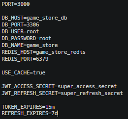
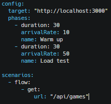
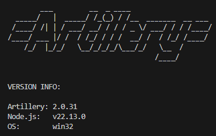
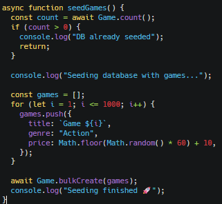
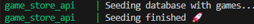
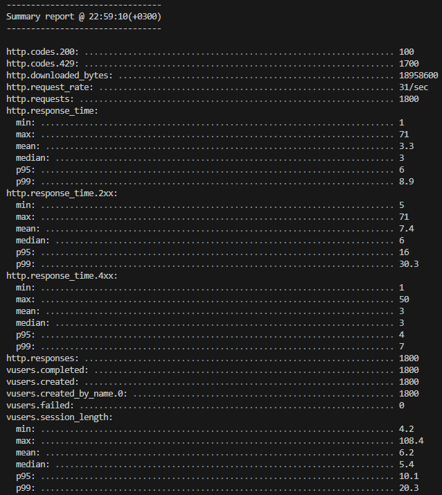
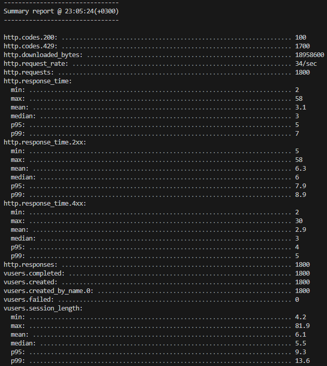

Зображення
Файл .env з маршрутами та конфеденційними данними

Створюємо файл тест навантаження


наповнюємо БД, 1000 записів інакше кеш не має сенсу


Без Redis: 50 rps → 50 SQL SELECT * FROM games (1000 rows)
З Redis: 50 rps → 1 SQL + 49 Redis
Різниця буде в рази.
У файлі .env спочатку значення USE_CACHE=false без кешу потім USE_CACHE=true і з кешем
Запуск без кеша:
npx artillery run artillery-test.yml

Запуск з кешем:
npx artillery run artillery-test.yml

Загальна статистика Що показує Artillery
Було проведено навантажувальне тестування API за допомогою інструмента Artillery. Під час тестування генерувалося 20 запитів на секунду протягом 30 секунд. Загалом було виконано 1800 HTTP-запитів.
Після впровадження Redis-кешування було отримано такі результати:
середній час відповіді — 3.1 ms
95-й перцентиль — 5 ms
99-й перцентиль — 7 ms
помилок виконання не зафіксовано (vusers.failed = 0)
Значна кількість відповідей зі статусом 429 пояснюється роботою механізму обмеження швидкості (Rate Limiter), що підтверджує наявність захисту API від перевантаження.
Порівняно з режимом без кешування, використання Redis дозволило уникнути постійних звернень до бази даних та суттєво зменшити затримку відповіді сервера. Більшість запитів оброблялися безпосередньо з кешу, що забезпечило стабільну роботу системи під навантаженням та покращило масштабованість застосунку.